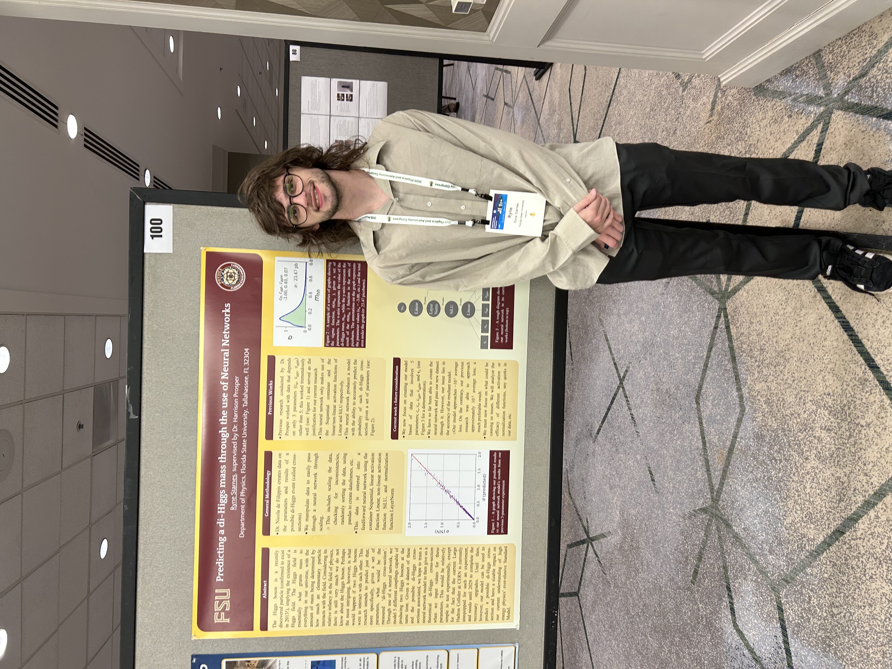
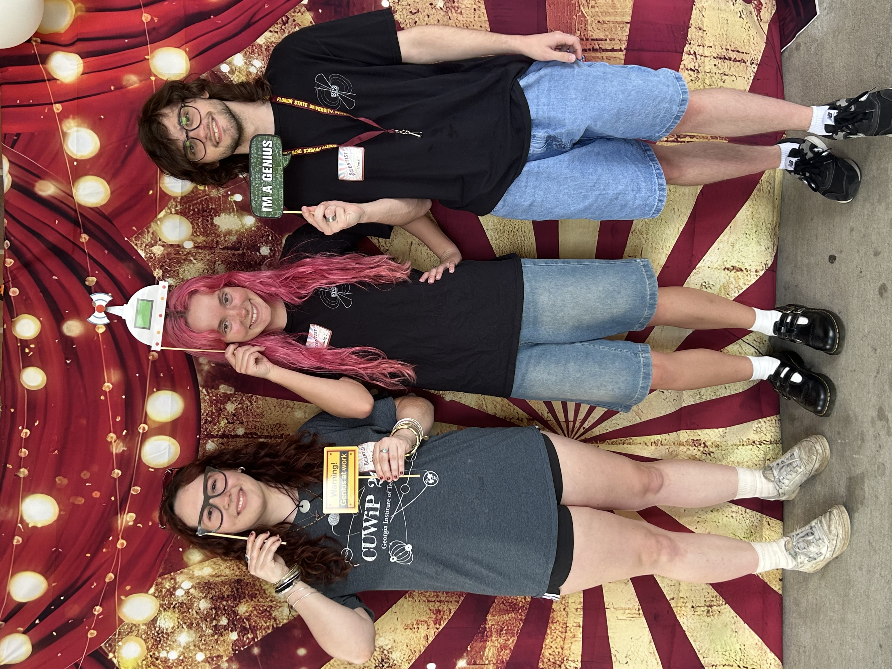
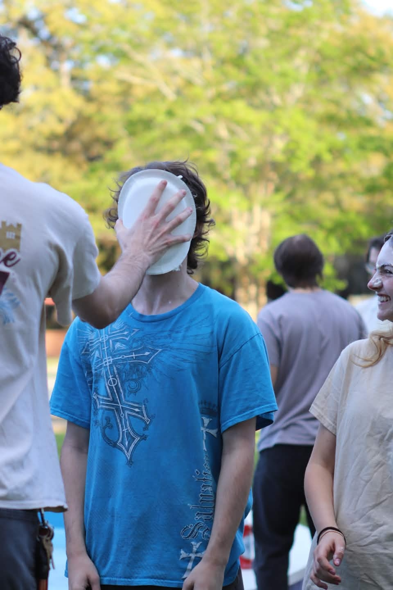

Physics & Astrophysics | Applied Mathematics | Florida State University
I'm an undergraduate student pursuing a dual degree in Physics & Astrophysics and Applied & Computational Mathematics at Florida State University. I stay very involved with my department, especially through the Society of Physics Students, and the various outreach events our department hosts. My research focuses on machine learning applications in particle physics, including work with the CMS collaboration. I'm currently exploring PhD programs focused on ML applications in particle and neutrino physics. I would absolutely love to work on the IceCube, DUNE, and/or CMS/ATLAS experiments in my graduate studies.
My family and I are all from Fort Myers, FL, but I've also lived a good chunk of my life in Lawrenceville, GA and Frisco, TX. It wasn't until high school that I decided that I wanted to study science in college, and it wasn't until I got to college that I decided to study physics, but it was the best decision of my life. The research I've done has felt so rewarding, and the people I've met are incredibly inspiring.
I haven't had much opportunity to, but I love seeing new places! I've only traveled in the U.S., and my favorite cities so far are Atlanta, Knoxville, and Madison. I've also started to enjoy outdoors activities a lot more recently, especially fishing and the beach.
You can view or download my full CV below.
View CV (PDF)

